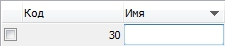

При разработке
framework'а основной упор был сделан на возможность повторного использования кода и быстрой заменой одного элемента проекта на другой, декомпозиции всего проекта на составные части. Также была рассмотрена возможность применения шаблона
Model View Controller.
Основной задачей
framework'а является быстрое построение клиент-серверных приложений с использованием различных
СУБД.
Для решения поставленных задач, была заимствована концепция, которая присутствует в
Qt framework'е . К сожалению, в сегодняшней реализации языка
Delphi (на момент
20.09.2012) отсутствует возможность подключения одного события (
native Delphi event) к множеству обработчиков. Поэтому было принято решение реализовать данную возможность в виде
signal/slot архитектуры.
Роль
signal выполняет обычный
native Delphi event, т.е. все переменные объявленные как
procedure/function of object. В качестве
slot используется любой метод, объявленный в секции
published.
Существует два режима отсоединения
slot'ов:
- в ручном режиме - программист сам должен контролировать процесс отсоединения slot'ов от signal'ов, с помощью процедуры disconnect
- в атоматическом режиме
Пример создания slot'ов...
...
published
{$REGION 'SLOTS'}
procedure slot1(aSender: tObject);
procedure slot2(aSender: tObject);
{$ENDREGION}
end;
...
implementation
...
procedure cSomeClass.setupEvents;
begin
//Подключаем к native Delphi event 2 slot'а
connect(ui.someButton, 'onClick', self, 'slot1');
connect(ui.someButton, 'onClick', self, 'slot2');
end;
...
{$REGION 'SLOTS'}
procedure cSomeClass.slot1(aSender: tObject);
begin
//выполняем какие-то действия
end;
procedure cSomeClass.slot2(aSender: tObject);
begin
//выполняем какие-то действия
end;
{$ENDREGION}
При анализе архитектуры
Model View Controller, было выявлено, что при использовании
controller'а код приложения будет громоздким и менее читабельным. Поэтому, из
Qt Framework был заимствован шаблон
MVD.
MVD - model view delegate, шаблон проектирования, в котором существует три участника: модель, представление и делегат.
Модель - набор данных, который реализует доступ к определенным сущностям, обычно модель выносится в отдельный модуль.
Представление - в данном случае - это
proxy (прослойка) класс, который предоставляет доступ к
native Delphi компонентам (edit, comboBox, treeView, grid, и т.д.).
Для представлений в
framework'е существуют наборы
proxy классов, которые являются посредниками между обычными
native Delphi компонентами и
proxy классами.
Такой подход был выбран для быстрой смены
native Delphi компонентов на другие.
Делегат - служит точкой для двустороннего обмена данными, модель - представление (см. рисунок, делегат вызвал метод
createEditor, для поля "Имя"), обычно выносится в отельный модуль. Делегат может быть установлен как для всей таблицы/дерева, так и для отдельной колонки, строки и ячейки.

На сегодняшний день (
20.09.2012)
framework содержит в себе более
200 классов, которые помогают пользователю при разработке приложения.
Для подключения к базам данных в
framework'е существует специальный класс
singleton -
cSQLDatapoints, который содержит в себе все необходимые подключения, создаваемые пользователем. Поскольку пользователь, обычно, работает всего с одним подключением к
БД, в классе существует понятие текущего соединения. Также при создании подключения возможно указать драйвер, используемый при подключении к
БД.
Рассмотрим
пример создания подключения к БД SQLite...
var
SQLDatapoints: cSQLDatapoints;
begin
SQLDatapoints:= cSQLDatapoints.getInstance;
//драйвер, имя точки данных
clientsDb:= SQLDatapoints.createConnection(drvSQLite, 'demo');
clientsDb.setDatabase('demo.sqlite');
clientsDb.open;
end;
пример создания подключения к БД PostgreSQL...
var
SQLDatapoints: cSQLDatapoints;
rheaDB: cAbstractSQLConnection;
begin
SQLDatapoints:= cSQLDatapoints.getInstance;
//драйвер, имя точки данных
rheaDB:= SQLDatapoints.createConnection(drvPGSQL, 'rhea');
rheaDB.setDatabase('rhea');
rheaDB.setHost('localhost');
rheaDB.setPort(5432);
rheaDB.setUserName('userName');
rheaDB.setPassword('password');
rheaDB.open;
end;
Рассмотрим пример создания модели, представления, делегата.
Для модели таблицы
БД существует возможность простого описания и с использованием
ORM, обычно при использовании
ORM подхода модель выносится в отдельный модуль.
Пример создания модели без ORM...
var
SQLTableModel: cSQLTableModel;
begin
SQLTableModel:= cSQLTableModel.create;
with SQLTableModel do begin
setRowClass(cSQLStdTableRow);
setTableName('clients');
setSelectCommand('select id, name, description, balance from clients');
//имя поля в БД, заголовок поля, только чтение, сортировка
addField('id' , 'Код' , false);
addField('name' , 'Имя' , false, sdAsc);
addField('description' , 'Описание' , false);
addField('balance' , 'Баланс' , false);
setKeyField('id');
//устанавливаем нужное соединение
setConnection(cSQLDatapoints.getInstance.getCurrentConnection);
end;
end;
Пример создания модели с ORM в отдельном модуле...
unit clsClients;
interface
uses
classes,
sysUtils,
variants,
uModels,
clsSQLDatapoints,
clsAbstractTableModel,
clsSQLTableModel;
type
//необходимо описать каркас для полей таблицы clients
//в простом случае никакого кода не требуется
cClient = class(cSQLTableRow)
private
fName : string;
fDescription : string;
fBalance : currency;
published
property name: string read fName write fName;
property description: string read fDescription write fDescription;
property balance: currency read fBalance write fBalance;
end;
//класс-владелец строк таблицы clients
cClients = class(cSQLTableModel)
public
constructor create; override;
end;
implementation
{ cClients }
constructor cClients.create;
begin
inherited create;
setRowClass(cClient);
setTableName('clients');
setSelectCommand('select id, name, description from clients');
//включаем возможность выбирать строки в модели
enableSelector(true);
//имя поля в БД, заголовок поля, только чтение, сортировка
addField('id' , 'Код' , false);
addField('name' , 'Имя' , false, sdAsc);
addField('description' , 'Описание' , false);
addField('balance' , 'Баланс' , false);
setKeyField('id');
setConnection(cSQLDatapoints.getInstance.getCurrentConnection);
end;
end.
Для
SQL модели, которая была создана через
ORM вариант, существует возможность работать со строкой
БД с помощью шаблона
active record.
Пример создания active record...
var
clientRecord: cClient;
begin
clientRecord:= clientsModel.createActiveRecord as cClient;
try
//выбираем клиента с ключом 110, либо передаем condition
clientRecord.fetch(110);
clientRecord.name:= 'новое имя';
clientRecord.description:= 'новое описание';
clientRecord.balance:= 10;
//обновляем запись в БД
clientRecord.update;
finally
freeAndNil(clientRecord);
end;
end;
Пример создания представления...
uses
clsTableViewProxy;
...
property clientsGridProxy: cTableViewProxy read fClientsGridProxy;
...
implementation
...
procedure cSomeUiClass.createViewProxies;
begin
fClientsGridProxy:= cTableViewProxy.create;
//установка native Delphi компонента
//в данном случае gClients - класс tKGrid
clientsGridProxy.setView(gClients);
end;
...
procedure cSomeClass.setupViewProxies;
begin
with ui.clientsGridProxy, clientsModel.getFields do begin
setModel(clientsModel);
render;
setColVisible(modelColToViewCol(indexOfName('id')), true);
setDefaultColsWidth;
setColWidth(modelColToViewCol(indexOfName('selector')), 20);
setSortable(true);
end;
end;
...
procedure cSomeClass.removeViewProxies;
begin
if assigned(fClientsGridProxy) then begin
freeAndNil(fClientsGridProxy);
end;
end;
Пример создания делегата...
unit clsClientsDelegate;
interface
uses
dialogs,
stdCtrls,
controls,
sysUtils,
classes,
windows,
variants,
extCtrls,
extDlgs,
uModels,
clsVariantConversion,
clsMemoViewProxy,
clsAbstractEditableViewProxy,
clsAbstractTableViewProxyDelegate,
clsAbstractTableModel,
clsTableViewProxy;
type
cClientsDelegate = class(cAbstractTableViewProxyDelegate)
private
fEditorProxy : cMemoViewProxy;
public
constructor create; virtual;
destructor destroy; override;
public
function canCreateEditor(aView: cTableViewProxy; aViewCol, aViewRow: integer; aModel: cAbstractTableModel; aModelCol, aModelRow: integer; aDefaultCanCreateEditor: boolean): boolean; override;
function createEditor(aView: cTableViewProxy; aViewCol, aViewRow: integer; aModel: cAbstractTableModel; aModelCol, aModelRow: integer; aType: tDataType): cAbstractEditableViewProxy; override;
procedure destroyEditor(aView:cTableViewProxy; aEditor: cAbstractEditableViewProxy; aViewCol, aViewRow: integer; aModel: cAbstractTableModel; aModelCol, aModelRow: integer; aType: tDataType); override;
procedure getEditorData(aView: cTableViewProxy; aViewCol, aViewRow: integer; aModel: cAbstractTableModel; aModelCol, aModelRow: integer; aEditor: cAbstractEditableViewProxy; var aAssignedValue: variant); override;
procedure setEditorData(aView: cTableViewProxy; aViewCol, aViewRow: integer; aModel: cAbstractTableModel; aModelCol, aModelRow: integer; aEditor: cAbstractEditableViewProxy; var aAssignedValue: variant); override;
procedure updateEditorGeometry(aView: cTableViewProxy; aViewCol, aViewRow: integer; aModel: cAbstractTableModel; aModelCol, aModelRow: integer; aEditor: cAbstractEditableViewProxy; var aRect: tRect); override;
end;
implementation
{ cClientsDelegate }
constructor cClientsDelegate.create;
begin
inherited create;
end;
destructor cClientsDelegate.destroy;
begin
inherited;
end;
function cClientsDelegate.canCreateEditor(aView: cTableViewProxy; aViewCol, aViewRow: integer; aModel: cAbstractTableModel; aModelCol, aModelRow: integer; aDefaultCanCreateEditor: boolean): boolean;
begin
result:= true;
end;
function cClientsDelegate.createEditor(aView: cTableViewProxy; aViewCol, aViewRow: integer; aModel: cAbstractTableModel; aModelCol, aModelRow: integer; aType: tDataType): cAbstractEditableViewProxy;
begin
fEditorProxy:= cMemoViewProxy.create;
fEditorProxy.setView(tMemo.create(nil));
result:= fEditorProxy;
end;
procedure cClientsDelegate.destroyEditor(aView: cTableViewProxy; aEditor: cAbstractEditableViewProxy; aViewCol, aViewRow: integer; aModel: cAbstractTableModel; aModelCol, aModelRow: integer; aType: tDataType);
begin
aView.defaultDestroyEditor(aEditor, aType);
end;
procedure cClientsDelegate.getEditorData(aView: cTableViewProxy; aViewCol, aViewRow: integer; aModel: cAbstractTableModel; aModelCol, aModelRow: integer; aEditor: cAbstractEditableViewProxy; var aAssignedValue: variant);
begin
aModel.setFieldData('description', aModelRow, aEditor.getValue);
end;
procedure cClientsDelegate.setEditorData(aView: cTableViewProxy; aViewCol, aViewRow: integer; aModel: cAbstractTableModel; aModelCol, aModelRow: integer; aEditor: cAbstractEditableViewProxy; var aAssignedValue: variant);
begin
end;
procedure cClientsDelegate.updateEditorGeometry(aView: cTableViewProxy; aViewCol, aViewRow: integer; aModel: cAbstractTableModel; aModelCol, aModelRow: integer; aEditor: cAbstractEditableViewProxy; var aRect: tRect);
begin
inherited updateEditorGeometry(aView, aViewCol, aViewRow, aModel, aModelCol, aModelRow, aEditor, aRect);
aRect.right:= aRect.left + 200;
aRect.bottom:= aRect.top + 100;
end;
end.
Пример присвоения делегата колонке...
procedure cSomeClass.createDelegates;
begin
with ui.clientsGridProxy, clientsModel do begin
setColDelegate(
modelColToViewCol(getFields.indexOfName('description')),
cClientsDelegate.create
);
end;
end;